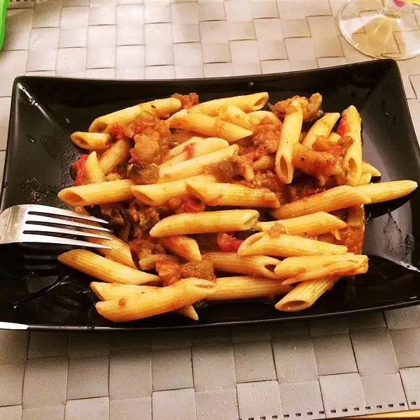

Eggplant Pasta
Home

Description
This is a simple, easy to make, and quick to cook pasta recipe. It is a great way to make a meal for the family.
Ingredients
- ¼ cup olive oil
- 2 cloves garlic, minced
- 1 eggplant, peeled and cut into 1/2-inch cubes
- 1 (28 ounce) can plum tomatoes with juice, chopped
- 1 (16 ounce) package rigatoni pasta
Steps
- Heat olive oil in a large skillet over medium heat; cook and stir garlic until fragrant, 1 to 2 minutes. Add
eggplant; cook, stirring constantly, until eggplant is softened, about 5 minutes. Add tomatoes and juice;
cook until sauce is slightly reduced, about 20 minutes.
- Bring a large pot of lightly salted water to a boil. Cook rigatoni in the boiling water, stirring
occasionally until cooked through but firm to the bite, about 13 minutes. Drain and transfer to a serving
bowl.
- Pour sauce over pasta.